Thirdtype · everyday utilities
군더더기는 덜고, 쓰임은 분명하게.
슬기로운 생활은 작은 불편을 덜어줄 일상의 도구를 만듭니다. 필요한 기능을 고르고, 쓰임이 분명하지 않은 것은 덜어냅니다. 생활 속에서 제 역할을 하는 앱을 만듭니다.
01Android · iPhone
총명함
명함을 스캔해 정리하고, 필요한 순간에 다시 떠올릴 수 있도록 돕는 기록 도구입니다.
앱 상세 보기 ↗
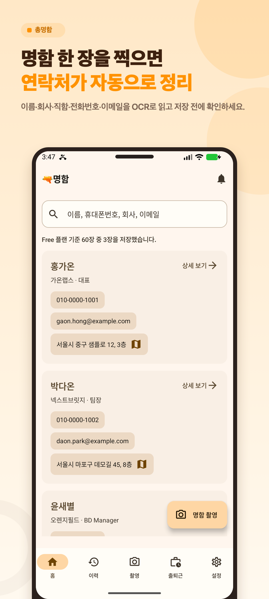
명함을 한곳에 모아 보는 목록
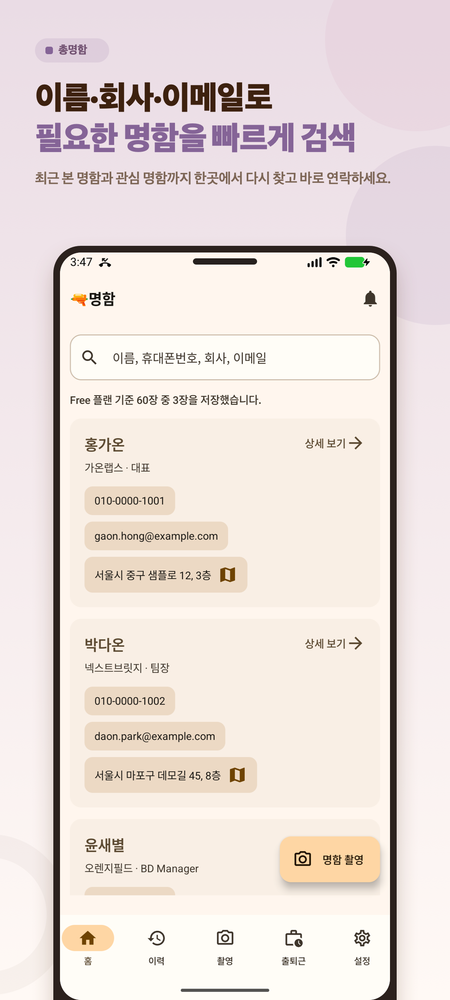
필요한 사람의 정보를 다시 확인하는 화면
02Android
주식 매도신호등
장 시작 전 일곱 가지 위험 지표를 신호등 색으로 간결하게 요약합니다.
앱 상세 보기 ↗
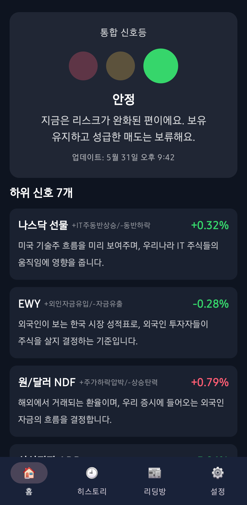
일곱 가지 위험 지표를 한눈에 보는 화면
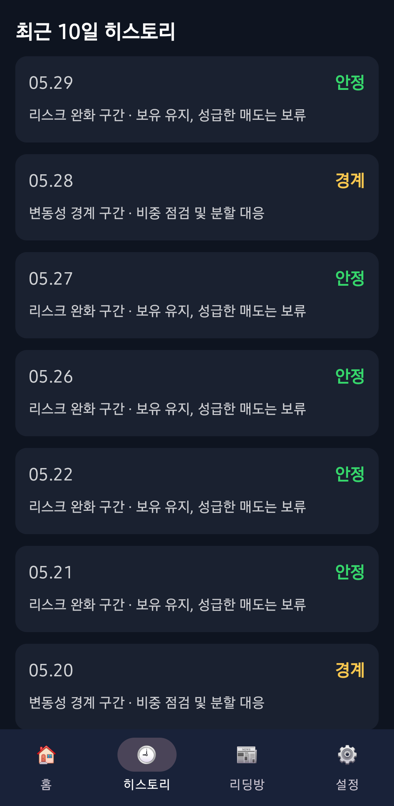
장 시작 전 시장 흐름을 살피는 요약
03Android · iPhone
GPS Speed Go
현재 속도를 크게 보여주는, 인터넷 연결 없이도 사용할 수 있는 GPS 속도계입니다.
앱 상세 보기 ↗
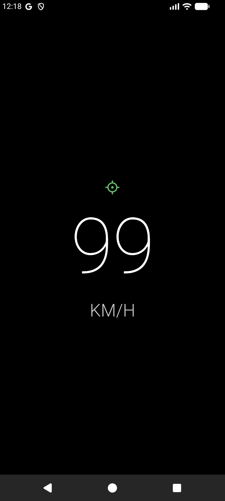
현재 속도를 크게 확인하는 기본 화면
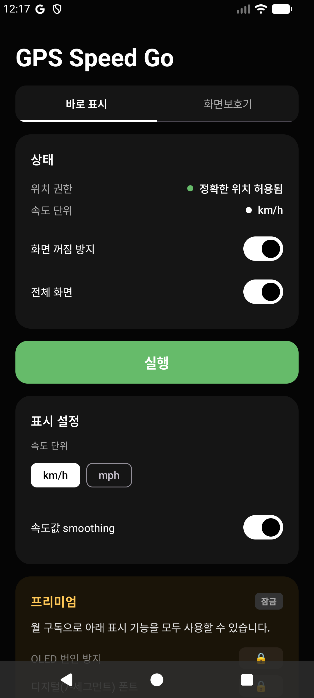
필요한 단위로 바꾸는 설정
04Android · iPhone
오늘내일모레
오늘, 내일, 모레에 집중할 수 있도록 만든 간결한 세 칸 캘린더입니다.
앱 상세 보기 ↗
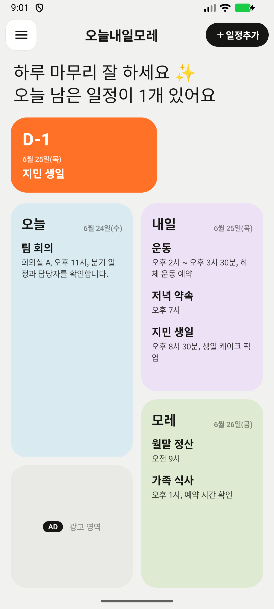
오늘, 내일, 모레를 나누어 보는 캘린더
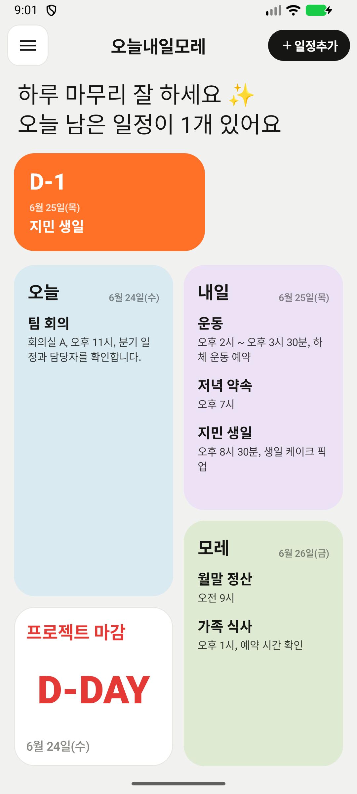
가까운 날에 할 일을 남기는 화면
05Android
레트로 타임스탬프
사진의 EXIF 날짜를 바탕으로 추억을 닮은 레트로 스탬프를 더합니다.
앱 상세 보기 ↗
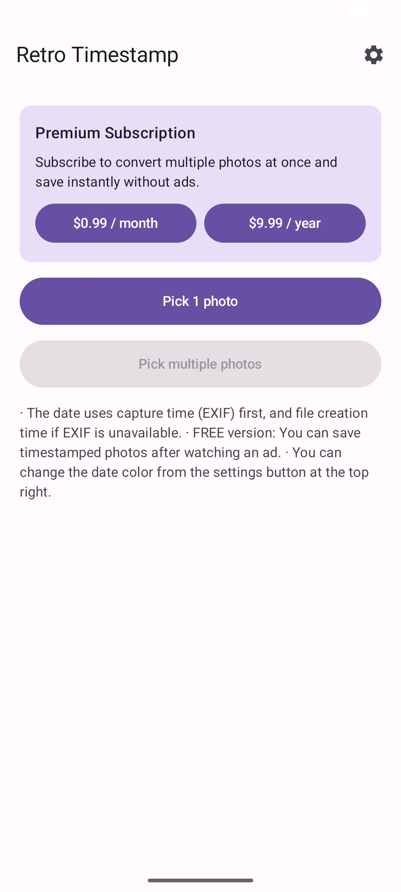
사진의 시간을 읽어오는 편집 화면
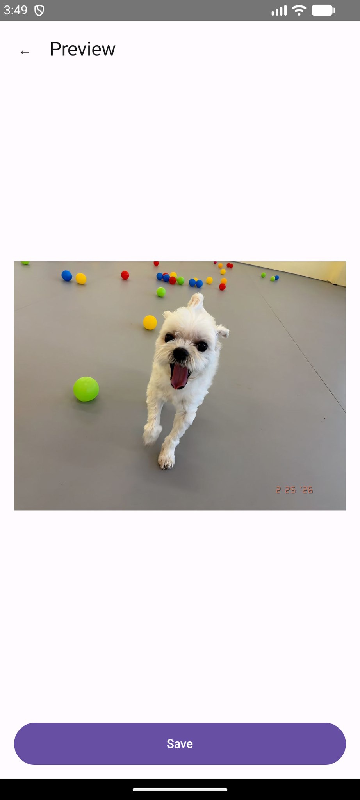
사진에 남길 날짜를 고르는 화면
06Android
디지털 멀미 치료제
움직임에 반응하는 가장자리 점과 선택형 헤드폰 전용 100Hz 톤을 제공하는 화면 도구입니다.
앱 상세 보기 ↗
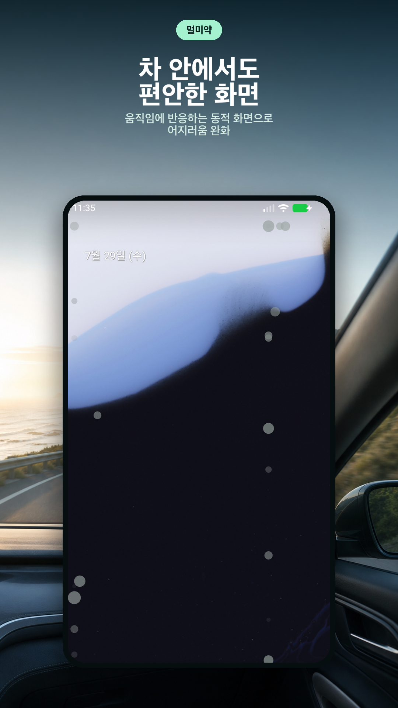
움직임에 따라 반응하는 화면 가장자리
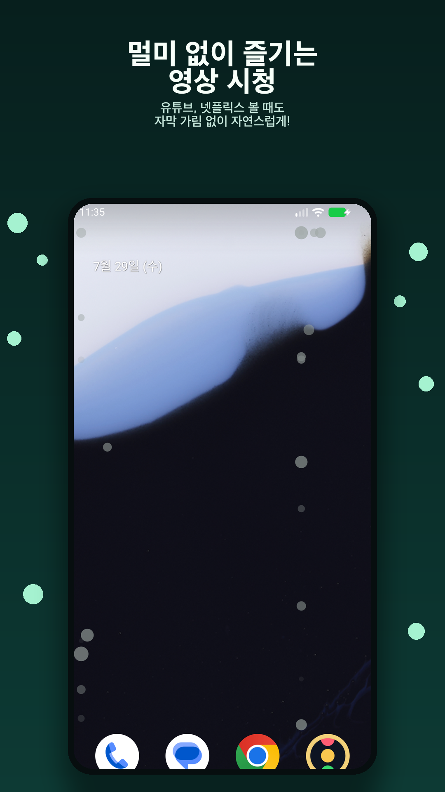
선택형 헤드폰 전용 톤 설정
07Android · iPhone
경제신문
여러 경제 매체의 뉴스를 한곳에서 읽는 올인원 경제 뉴스 리더입니다.
앱 상세 보기 ↗
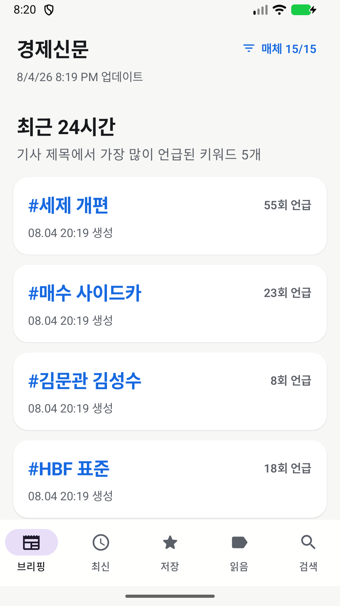
최근 24시간 핵심 키워드를 카드로 보는 브리핑
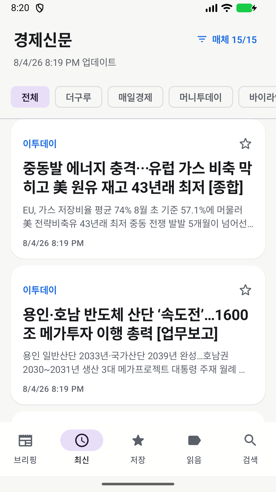
전체·매체별 경제 뉴스를 나누어 보는 최신 목록
08Android
서울롤
사진을 필름 롤 콜라주로 만들고, 서울 감성 필터와 레트로 타임스탬프로 기록하세요.
앱 상세 보기 ↗
 여러 장의 사진을 한 장의 필름롤로 엮은 결과
여러 장의 사진을 한 장의 필름롤로 엮은 결과
 도시 필터와 필름 질감으로 사진을 편집하는 화면
도시 필터와 필름 질감으로 사진을 편집하는 화면
우리가 추구하는 것
이것으로 충분하다는 만족감.
우리의 기준은 필요한 일을 해낼 수 있는가입니다. 기능을 더하고 완성도를 끝없이 높이기보다, 생활 속 작은 문제에 쓸 만한 답을 내놓고 싶습니다.
명함을 다시 찾을 때, 현재 속도를 확인하고 싶을 때, 가까운 일정에 집중하고 싶을 때. 우리는 이런 구체적인 순간에서 앱의 쓰임을 찾습니다.
필요한 만큼 만들고, 쓰임이 분명하지 않은 기능은 덜어냅니다. 하나의 앱이 생활의 모든 문제를 해결할 필요는 없다고 생각합니다.
사용성과 디자인은 그 쓰임을 돕는 수단입니다. 모든 면에서 빈틈없는 앱을 목표로 하기보다, 필요한 기능이 제 역할을 하고 일상에 무리 없이 어울리는 정도를 찾습니다.
쓰면서 드러나는 불편은 실제 필요를 살펴 고쳐갑니다. 더 많은 기능이나 더 근사한 모습이 언제나 더 나은 답은 아니기 때문입니다.
우리가 앱을 만드는 기준
생활의 구체적인 필요에서 시작합니다.
어떤 기능을 넣을지보다, 일상의 어느 순간에 이 도구가 필요한지 먼저 생각합니다.
필요한 만큼의 기능을 담습니다.
할 수 있는 일을 모두 넣기보다, 그 쓰임에 필요한 기능을 고릅니다.
충분한 지점을 찾습니다.
사용성과 디자인의 점수를 끝없이 높이기보다, 필요한 일을 해낼 수 있는지를 기준으로 삼습니다.
생활에 자연스럽게 어울립니다.
앱 자체가 눈에 띄기보다, 필요할 때 꺼내 쓰는 익숙한 도구가 되기를 바랍니다.
실제 필요에 따라 고쳐갑니다.
기능을 늘리는 일도, 덜어내는 일도 쓰면서 드러나는 필요를 기준으로 판단합니다.
필요한 순간에 제 역할을 하고, 이것으로 충분하다고 느낄 수 있는 앱. 슬기로운 생활이 만들고 싶은 도구입니다.